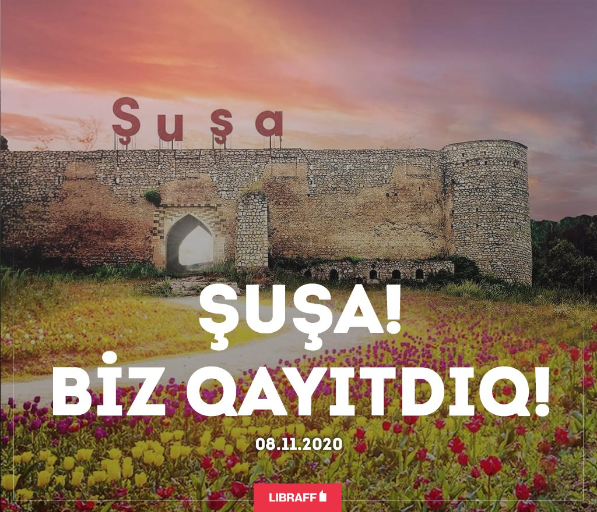

Şəhərin təməli1752-ci ildə Qarabağ hökmdarı Pənahəli xan tərəfindən qoyulub və ilk çağlarda şəhəri Şuşa adı ilə yanaşı xanın şərəfinə Pənahabad adlandırırdılar.Şuşada 17 məhəllə vardı:Seyidli, Culfalar, Quyuluq, Çuxur məhəllə, Dörd çinar, Dördlər qurdu, Hacı Yusifli, Çöl qala, Qurdlar, Saatlı, Köçərli, Mamayı, Xoca Mərcanlı, Dəmirçilər, Hamamqabağı, Merdinli və Təzə məhəllə.Hər məhəllədə hamam, məscid və bulaq vardı.
 Susa haqqinda video